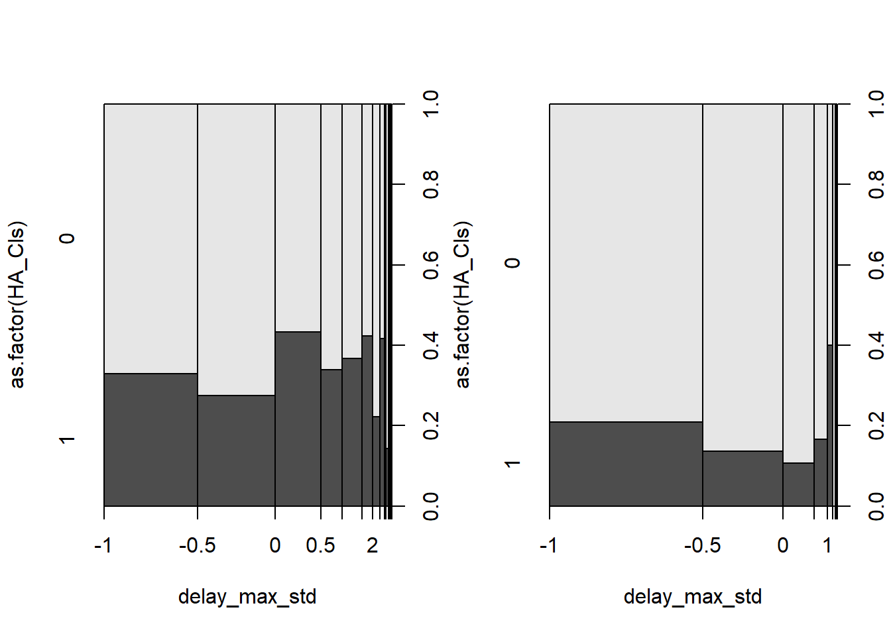
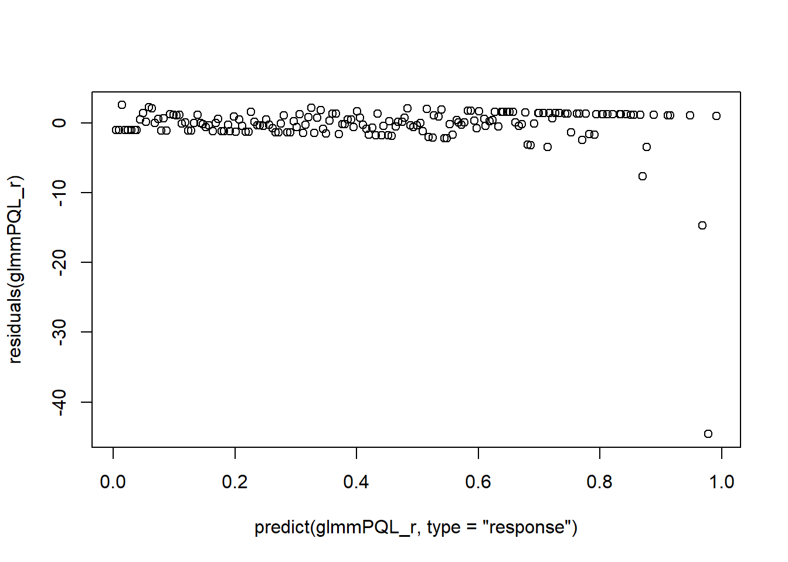

Chapter 6 Applied Stats Model II - Exam 1
6.1 1. (7 points) In a poisson regression problem with one explanatory variable x, the estimate of the β
coefficient under a log link is βˆ = 0.5. If, when x = 1 we can obtain a predicted count of µˆ = 4. What is the predicted count when x = 3?
# since the link is log, I transform it back to the count or 1.65
exp(0.5)## [1] 1.648721#the intercept is 0.8862944 = log(4)-1*0.5 #??? does the intercept needs the log? -> I assume mu is after the exp().Thus, I take a log().
log(4)- 1*0.5 ## [1] 0.8862944#when x = 3, 3*beta = 4.95
3 * 1.65 ## [1] 4.95#Thus, the predicted count is
exp(0.8862944) + 3*1.65 ## [1] 7.376123The predicted count when the x =3 is 7.37 or 7 times.
6.2 2. (5 points) In a generalized linear model, why is the null deviance typically larger than the residual deviance?
The null model only contains the intercept, while the residual deviance comes from the model with other predictors. If the other predictors are useful in the prediction, the deviance will be smaller.
6.3 3. (5 points) Can standard linear regression ever be used when the data are counts? Explain why or why not.
Yes it can run and predict the counts as the count can be expressed linearly. However, the result won’t be valid. First, the count data are strickly 0 or positive. linear regression will lead to negative prediction. Second, The distribution of error terms won’t be normal as there is often 0 inflation in the count data.
6.4 4. Take the following random effect model
yij = µ + αi + εij . This model was fit using lmer() and analyzed with the below. TheModel <- lmer(y ~ (1 | alpha), data= TheData) summary(TheModel) ## Linear mixed model fit by REML \['lmerMod'\] ## Formula: y ~ (1 | alpha) ## Data: TheData ## ## REML criterion at convergence: 5035925 ## ## Scaled residuals: ## Min 1Q Median 3Q Max ## -5.0460 -0.6744 -0.0009 0.6759 4.6942 ## ## Random effects: ## Groups Name Variance Std.Dev. ## alpha (Intercept) 2.435 1.561 ## Residual 9.007 3.001 ## Number of obs: 1000000, groups: alpha, 10 ## ## Fixed effects: ## Estimate Std. Error t value ## (Intercept) 14.9258 0.4935 30.25 ranef(TheModel)$alpha ## (Intercept) ## 1 1.8086783 ## 2 -0.5872736 ## 3 2.2398284 ## 4 -1.5152633 ## 5 0.1962228 ## 6 -2.0713461 ## 7 0.5250623 ## 8 -2.0133227 ## 9 -0.1044895 ## 10 1.5218990
6.4.1
Complete the following:
6.4.2 (3 points) Find the intra class correlation coefficient.
#S7 MM-RandomEffects_Spring2022
# ICC is the alpha variance out of total variance
ICC = 2.435 / (2.435 + 9.007)
ICC## [1] 0.2128124The intra class correlation is 0.21
6.5 5. Utilizing the below code and output, answer the following:
6.5.1 • (3 points) Why are the residual and null deviance values the same?
They are the same since the model only contains the intercept which essentially is the null model.
6.5.2 • (2 points) Based on these deviance values, does the model “fit” well? Does this make sense?
It doesn’t fit well as the variance is as large as the null model. It make sense, since they are the same model.
SomeData <- rgamma(n = 30, shape = 1.5, scale = 1.5)
AModel <- glm( SomeData ~ 1, family = Gamma )
summary(AModel)##
## Call:
## glm(formula = SomeData ~ 1, family = Gamma)
##
## Deviance Residuals:
## Min 1Q Median 3Q Max
## -1.6595 -0.7681 -0.2296 0.2560 1.5974
##
## Coefficients:
## Estimate Std. Error t value Pr(>|t|)
## (Intercept) 0.44293 0.06558 6.754 2.06e-07 ***
## ---
## Signif. codes: 0 '***' 0.001 '**' 0.01 '*' 0.05 '.' 0.1 ' ' 1
##
## (Dispersion parameter for Gamma family taken to be 0.6576803)
##
## Null deviance: 20.077 on 29 degrees of freedom
## Residual deviance: 20.077 on 29 degrees of freedom
## AIC: 109.17
##
## Number of Fisher Scoring iterations: 66.6 6. Take the data given by Problem6Data.csv, which contains a continuous response y and two predictors x1 and x2.
P6 <- read.csv("E:/Cloud/OneDrive - University of Missouri/Mizzou_PhD/Class plan/Applied Stats Model II/Exam1/Problem6Data.csv", stringsAsFactors = TRUE)6.6.1 a. (5 points) Read the data into R and make some plots between the response and predictors. Describe the patterns and comment on behaviors you observe with exact 0s.
plot(y ~ x1,P6)plot(y ~ x2,P6)library(tidyverse) # for mutate function## -- Attaching packages --------------------------------------- tidyverse 1.3.1 --## v ggplot2 3.3.5 v purrr 0.3.4
## v tibble 3.1.6 v dplyr 1.0.8
## v tidyr 1.2.0 v stringr 1.4.0
## v readr 2.1.2 v forcats 0.5.1## -- Conflicts ------------------------------------------ tidyverse_conflicts() --
## x dplyr::filter() masks stats::filter()
## x dplyr::lag() masks stats::lag()Plot_DF <- P6 |>
group_by(y) |>
summarise(count=n()) |> #n() is the summarise function option
mutate(etotal=sum(count), proportion=count/etotal)
Plot_DF## # A tibble: 451 x 4
## y count etotal proportion
## <dbl> <int> <int> <dbl>
## 1 0 50 500 0.1
## 2 1.00 1 500 0.002
## 3 1.00 1 500 0.002
## 4 1.00 1 500 0.002
## 5 1.00 1 500 0.002
## 6 1.01 1 500 0.002
## 7 1.02 1 500 0.002
## 8 1.05 1 500 0.002
## 9 1.05 1 500 0.002
## 10 1.06 1 500 0.002
## # ... with 441 more rowsThe y and x1 and x2 have a positive relationship. as x1 or x2 increases the y also increases.
There are 10% of y are 0s.
6.6.2 b. (5 points) Make a histogram of the response variable and comment on the shape. Are the values strictly positive?
hist(P6$y)
The response variable is highly right skewed with many 0s. The values are 0 and positive.
6.6.3 c. (4 points) State the range that the index parameter p, for use in the Tweedie distribution, must be contained in. Why is this the case?
The range should be seq(from=1.2,to=1.8,by=0.1) since there are 0s and positive values.
6.6.4 d. (6 points) Find an optimal value of p for use in the Tweedie Distribution, using a log link.
# why sometimes work, sometimes doesn't???
library(tweedie)
TW_p_log <- tweedie.profile(y ~ .,
p.vec = seq(from=1.2,to=1.8,by=0.05),
link.power = 0, do.plot = TRUE,# log link
data=P6)## 1.2 1.25 1.3 1.35 1.4 1.45 1.5 1.55 1.6 1.65 1.7 1.75 1.8
## .............Done.
Tweedie_p_log = TW_p_log$p.max
Tweedie_p_log## [1] 1.322449The optimal value is 1.32
6.6.5 e. (5 points) Again using a log link, fit a Tweedie Distribution using the index parameter value you obtained in part d.
library(statmod) # For tweedie family in glm()
clot_Tweedie_log <- glm(y ~ ., data=P6,
family=tweedie(var.power=TW_p_log$p.max,link.power=0))summary(clot_Tweedie_log)##
## Call:
## glm(formula = y ~ ., family = tweedie(var.power = TW_p_log$p.max,
## link.power = 0), data = P6)
##
## Deviance Residuals:
## Min 1Q Median 3Q Max
## -6.6608 -1.7594 -0.2129 1.0988 6.1159
##
## Coefficients:
## Estimate Std. Error t value Pr(>|t|)
## (Intercept) 1.129872 0.079286 14.25 <2e-16 ***
## x1 0.159589 0.005697 28.01 <2e-16 ***
## x2 0.163736 0.005503 29.76 <2e-16 ***
## ---
## Signif. codes: 0 '***' 0.001 '**' 0.01 '*' 0.05 '.' 0.1 ' ' 1
##
## (Dispersion parameter for Tweedie family taken to be 3.76473)
##
## Null deviance: 8883.3 on 499 degrees of freedom
## Residual deviance: 2433.2 on 497 degrees of freedom
## AIC: NA
##
## Number of Fisher Scoring iterations: 66.6.6 f. (6 points) For each of the values of x2 given by the R vector x2_vals <- seq(0, 15, by= .01), use the compound Poisson-Gamma structure to predict the probability of obtaining an exact 0 response when x1 is at its mean value.
summary(P6)## y x1 x2
## Min. : 0.000 Min. : 0.02041 Min. : 0.005161
## 1st Qu.: 9.546 1st Qu.: 3.46072 1st Qu.: 3.388906
## Median : 38.008 Median : 7.48721 Median : 7.396909
## Mean : 56.206 Mean : 7.50728 Mean : 7.408334
## 3rd Qu.: 86.223 3rd Qu.:11.35581 3rd Qu.:11.334116
## Max. :304.515 Max. :14.99988 Max. :14.979441# Generate the new dataset.
# create a new dataset with x2 taking all value, x1 taking mean. Then the count using the new data.
data_x2 <- data.frame(x2 = seq(0, 15, by= .01))
data_x1 <- data.frame(x1 = runif(n = 1501, min = 7.50728, max = 7.50728))
data_gen = cbind(data_x1,data_x2)mu.data_gen <- predict(clot_Tweedie_log, newdata=data_gen,type="response")
p_MLE <- TW_p_log$p.max
phi_MLE <- TW_p_log$phi.max
#mu.data_gen
Prob_Zero_Model <- exp(-mu.data_gen^(2 - p_MLE)/(phi_MLE*(2 - p_MLE)))summary(Prob_Zero_Model)## Min. 1st Qu. Median Mean 3rd Qu. Max.
## 0.0001304 0.0027375 0.0203945 0.0452845 0.0767088 0.1838113The probability to attain 0 response when x1 is at its mean is 4.5%.
# produce the actual 0 vs. predicted 0 comparison
#library(tidyverse)
#quilpie |> group_by(Phase) |> summarize(prop0_dat = mean(Rain==0)) |> cbind(Prob_Zero_Model)
#??? why is the actual data 10% 0, but here is 4.5%? Diff so much6.7 7. The ships dataset in the MASS package provides the number of incidents(indicents) resulting in ship damage as a function of total months of service(service), ship type(type), as well as: • Year of ship construction(year) – Broken into 5 year increments with the year’s variable value indicating the beginning of this period. e.g. year=60 refers to 1960-1964 • Period of operation(period) with realizations: – 60: 1960 - 1974 – 75: 1975 - 1979 The data can be loaded with: data(ships, package=“MASS”)
data(ships, package="MASS")6.7.1 a. (4 points) Use group_by and summarise to compute the average months of service for each combination of year of construction and period of operation. Explain why there is a 0 in the result.
#ships$year <- as.factor(ships$year)
#ships$period <- as.factor(ships$period)
library(tidyverse) # for mutate function
Plot_DF_Service <- ships |>
group_by(year, period) |>
summarise(mean=mean(service)) #variable name is mean## `summarise()` has grouped output by 'year'. You can override using the
## `.groups` argument.#Plot_DF_Service
#??? https://www.rdocumentation.org/packages/dplyr/versions/0.7.8/topics/summarise
# Why does it need mean = mean()? duplication?Plot_DF_Service## # A tibble: 8 x 3
## # Groups: year [4]
## year period mean
## <int> <int> <dbl>
## 1 60 60 9297.
## 2 60 75 3579.
## 3 65 60 6312.
## 4 65 75 4554
## 5 70 60 2173
## 6 70 75 4354.
## 7 75 60 0
## 8 75 75 2446.# then why the 70 and 60 combination has service???The 0 appears when the construction year is 75 (1975-1979) and the period of operation is 60 (1960-1964). The ship’s construction is after its period of operation, thus no service is recorded.
6.7.2 b. (3 points) Create a new filtered dataset by removing the rows where service=0.
library(dplyr) #must run the library again to avoid the duplicated names
# filter the data
ships_filter = filter(ships, ships$service > 0)6.7.3 c. (10 points) Fit both a Poisson rate model and Negative Binomial rate model model using number of incidents per service month as the response and all other variables as predictors. Compare which model is better using AIC.
# is it the aggregated model vs. individual count? or the same???
# using the filtered data?
ships_filter$incidents_month = ships_filter$incidents / ships_filter$servicePoisson_Mod <- glm(incidents ~ year + period + type + service, family=poisson, ships_filter)
summary(Poisson_Mod)##
## Call:
## glm(formula = incidents ~ year + period + type + service, family = poisson,
## data = ships_filter)
##
## Deviance Residuals:
## Min 1Q Median 3Q Max
## -3.4598 -1.6558 -0.3323 0.6261 3.5104
##
## Coefficients:
## Estimate Std. Error z value Pr(>|z|)
## (Intercept) -4.387e+00 1.151e+00 -3.811 0.000138 ***
## year 5.280e-02 1.378e-02 3.831 0.000127 ***
## period 3.642e-02 9.245e-03 3.939 8.19e-05 ***
## typeB 9.622e-01 2.058e-01 4.675 2.94e-06 ***
## typeC -1.212e+00 3.274e-01 -3.701 0.000215 ***
## typeD -8.652e-01 2.875e-01 -3.009 0.002619 **
## typeE -1.105e-01 2.350e-01 -0.470 0.638160
## service 4.785e-05 7.050e-06 6.787 1.15e-11 ***
## ---
## Signif. codes: 0 '***' 0.001 '**' 0.01 '*' 0.05 '.' 0.1 ' ' 1
##
## (Dispersion parameter for poisson family taken to be 1)
##
## Null deviance: 614.54 on 33 degrees of freedom
## Residual deviance: 120.56 on 26 degrees of freedom
## AIC: 234.43
##
## Number of Fisher Scoring iterations: 5NegBinom_Mod <- MASS::glm.nb(incidents ~ year + period + type + service, ships_filter)
# Convert back to glm() style object ??? why needs a conversion?
# why alternative style reached?
NegBinom_Mod_glm <- MASS::glm.convert(NegBinom_Mod)
summary(NegBinom_Mod_glm, dispersion=1)##
## Call:
## stats::glm(formula = incidents ~ year + period + type + service,
## data = ships_filter, family = negative.binomial(theta = 2.4737185912729,
## link = log))
##
## Deviance Residuals:
## Min 1Q Median 3Q Max
## -2.4048 -1.2366 -0.2498 0.3623 1.9697
##
## Coefficients:
## Estimate Std. Error z value Pr(>|z|)
## (Intercept) -8.461e+00 2.322e+00 -3.644 0.000269 ***
## year 1.154e-01 3.147e-02 3.667 0.000245 ***
## period 3.068e-02 2.075e-02 1.478 0.139299
## typeB 7.485e-01 5.544e-01 1.350 0.176967
## typeC -9.342e-01 4.910e-01 -1.903 0.057077 .
## typeD -8.513e-01 4.860e-01 -1.752 0.079843 .
## typeE 1.650e-01 4.458e-01 0.370 0.711302
## service 7.692e-05 2.186e-05 3.518 0.000434 ***
## ---
## Signif. codes: 0 '***' 0.001 '**' 0.01 '*' 0.05 '.' 0.1 ' ' 1
##
## (Dispersion parameter for Negative Binomial(2.4737) family taken to be 1)
##
## Null deviance: 141.113 on 33 degrees of freedom
## Residual deviance: 39.249 on 26 degrees of freedom
## AIC: 193.89
##
## Number of Fisher Scoring iterations: 16.7.4 d. (7 points) Using the better model selected in part c, assess the significance of each term using drop1(). Which terms are insignificant? Remove the insignificant variables from the model in c, and refit.
#Neg binomial is better.
drop1(NegBinom_Mod,test="F")## Single term deletions
##
## Model:
## incidents ~ year + period + type + service
## Df Deviance AIC F value Pr(>F)
## <none> 39.249 191.89
## year 1 50.604 201.25 7.5221 0.01089 *
## period 1 41.553 192.19 1.5267 0.22765
## type 4 50.667 195.31 1.8910 0.14211
## service 1 48.606 199.25 6.1987 0.01951 *
## ---
## Signif. codes: 0 '***' 0.001 '**' 0.01 '*' 0.05 '.' 0.1 ' ' 1All the terms are significant at 95% confidence level.
6.7.5 e. (6 points) Statistically compare the residual deviance in your final model from d to the null deviance.
pchisq(summary(NegBinom_Mod)$deviance,NegBinom_Mod$df.residual, lower.tail = FALSE)## [1] 0.046152The difference is significant at 95 % confidence level. Thus, the model in d is significantly better than the null model.
6.7.6 f. (4 points) Compare the AIC from the reduced model in d to the corresponding value from c. Is the change you see expected? Also examine the residual deviance of the model in d, what does it say about the model’s fit to the data?
#??? all are significant no change?Reduced model’s lowest AIC is 181 vs. the model in c is 183. The change is very small since the reduced model essentially is the same as the c (i.e., all variables are significant predictors).
Residual variance in d 42 or the same as the c. The model fits the data well.
6.7.7 g. (6 points) Make a plot of the deviance residuals vs the predicted values(link scale). How is the fit?
library(DALEX)## Welcome to DALEX (version: 2.4.0).
## Find examples and detailed introduction at: http://ema.drwhy.ai/
## Additional features will be available after installation of: ggpubr.
## Use 'install_dependencies()' to get all suggested dependencies##
## Attaching package: 'DALEX'## The following object is masked from 'package:dplyr':
##
## explainlibrary(auditor)##
## Attaching package: 'auditor'## The following object is masked from 'package:DALEX':
##
## model_performancei_NegBiExp <- DALEX::explain(NegBinom_Mod, data = ships_filter, y = ships_filter$incidents,verbose = FALSE)
i_NegBiHalfNorm <- model_halfnormal(i_NegBiExp)## Negative binomial model (using MASS package)#S16
plot_halfnormal(i_NegBiHalfNorm, quantiles = TRUE)
#S30
#Error: 'model_halfnormal' is not an exported object from 'namespace:DALEX' -> need auditor library. The fit is good. There is no over-dispersion issue anymore.